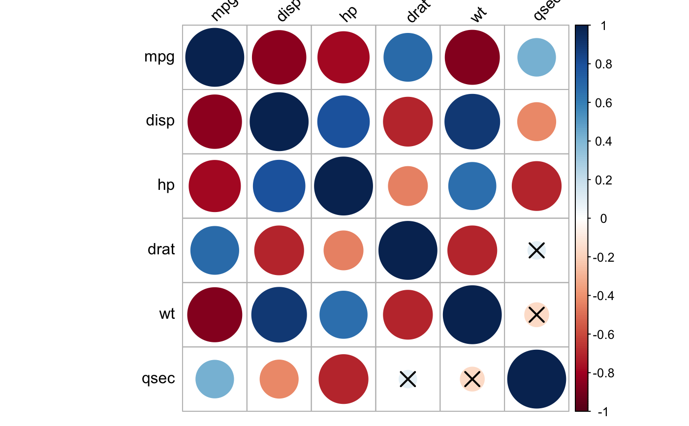
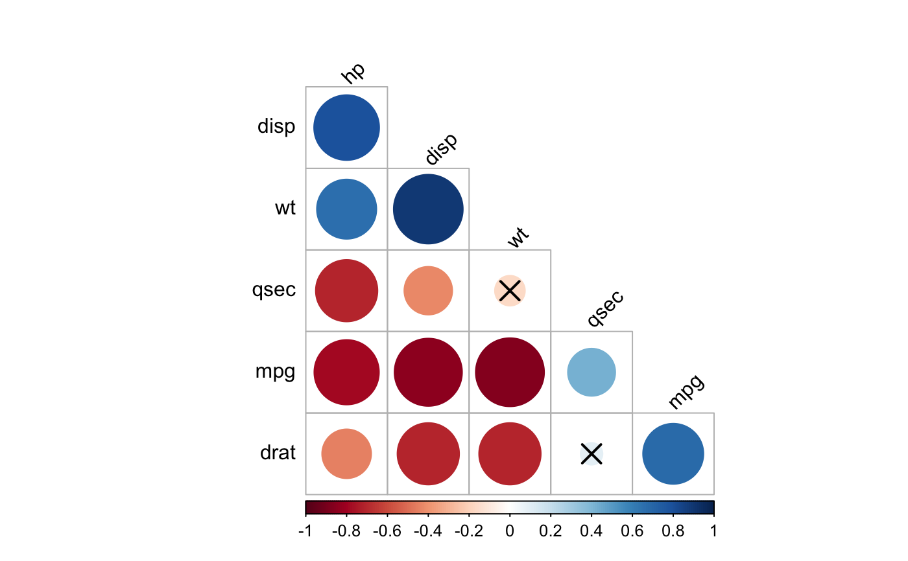
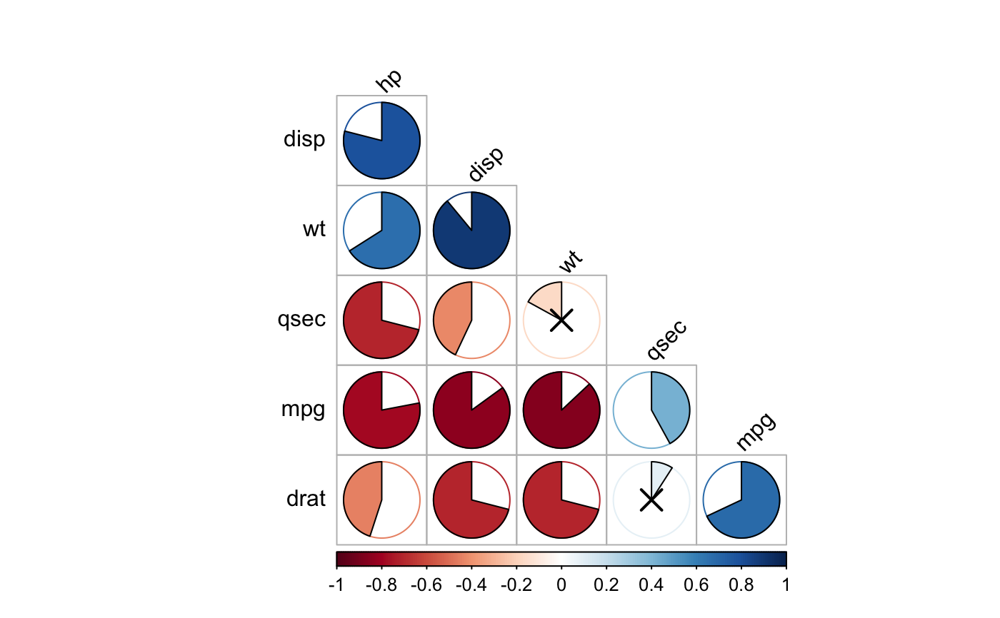
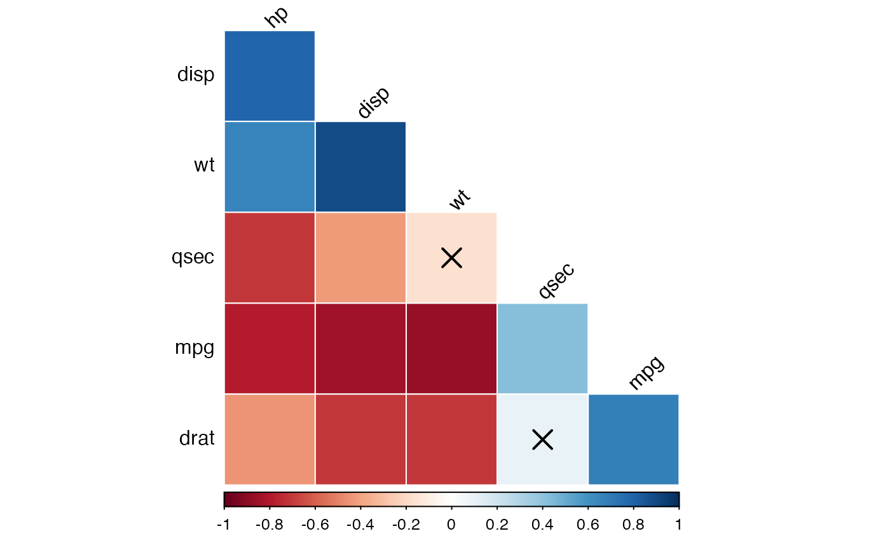
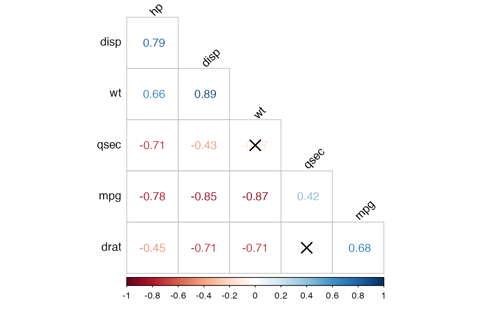
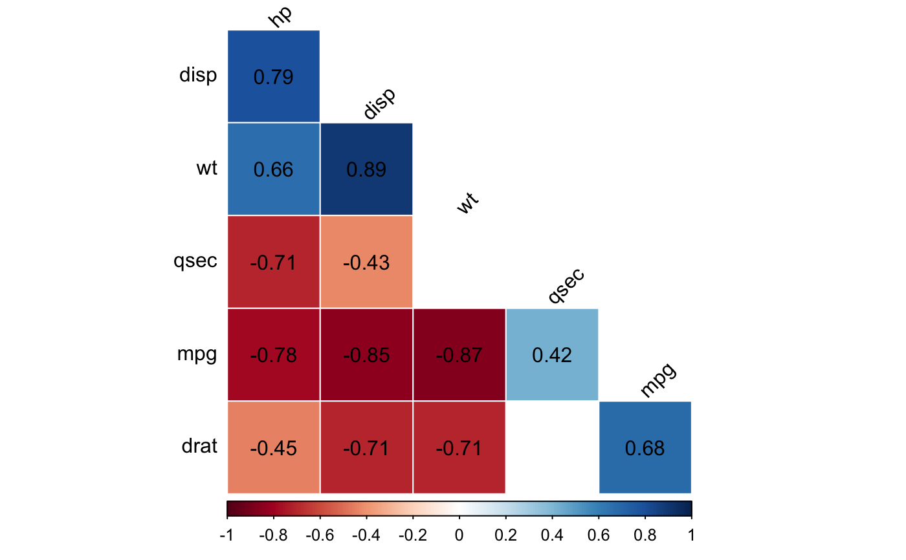
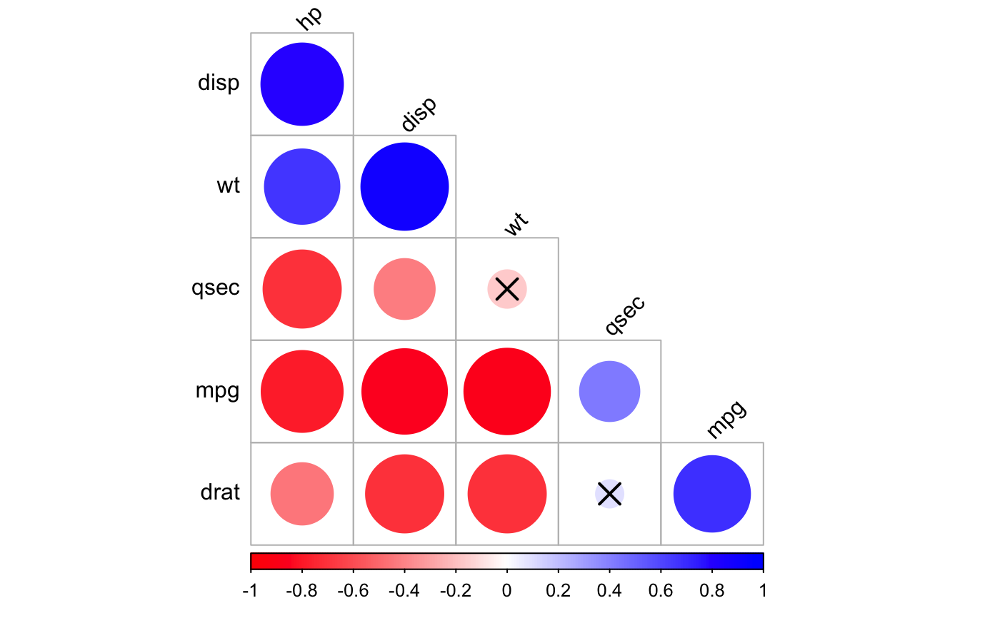
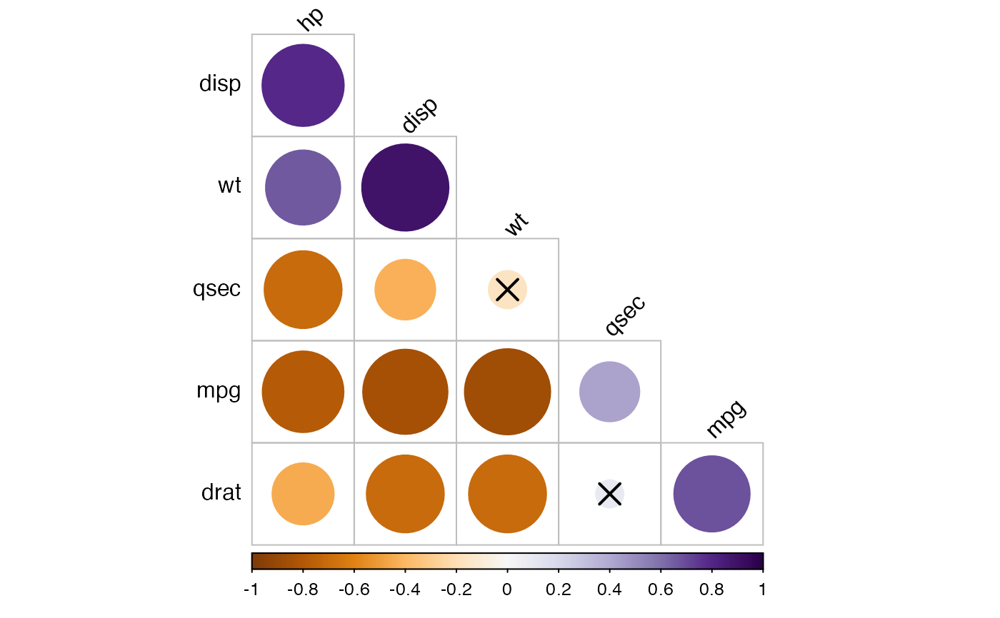

cor_plot.RdProvide a tibble-friendly framework to visualize a correlation
matrix. Wrapper around the R base function
corrplot(). Compared to
corrplot(), it can handle directly the output of the
functions cor_mat() (in rstatix), rcorr() (in Hmisc),
correlate() (in corrr) and cor() (in stats).
The p-values contained in the outputs of the functions
cor_mat() and rcorr() are automatically detected and
used in the visualization.
cor_plot( cor.mat, method = "circle", type = "full", palette = NULL, p.mat = NULL, significant.level = 0.05, insignificant = c("cross", "blank"), label = FALSE, font.label = list() )
| cor.mat | the correlation matrix to visualize |
|---|---|
| method | Character, the visualization method of correlation matrix to be
used. Currently, it supports seven methods, named The areas of circles or squares show the absolute value of corresponding
correlation coefficients. Method |
| type | Character, |
| palette | character vector containing the color palette. |
| p.mat | matrix of p-value corresponding to the correlation matrix. |
| significant.level | significant level, if the p-value is bigger than
|
| insignificant | character, specialized insignificant correlation coefficients, "cross" (default), "blank". If "blank", wipe away the corresponding glyphs; if "cross", add crosses (X) on corresponding glyphs. |
| label | logical value. If TRUE, shows the correlation coefficient labels. |
| font.label | a list with one or more of the following elements: size
(e.g., 1), color (e.g., "black") and style (e.g., "bold"). Used to
customize the correlation coefficient labels. For example |
# Compute correlation matrix #:::::::::::::::::::::::::::::::::::::::::: cor.mat <- mtcars %>% select(mpg, disp, hp, drat, wt, qsec) %>% cor_mat() # Visualize correlation matrix #:::::::::::::::::::::::::::::::::::::::::: # Full correlation matrix, # insignificant correlations are marked by crosses cor.mat %>% cor_plot()# Reorder by correlation coefficient # pull lower triangle and visualize cor.lower.tri <- cor.mat %>% cor_reorder() %>% pull_lower_triangle() cor.lower.tri %>% cor_plot()# Change visualization methods #:::::::::::::::::::::::::::::::::::::::::: cor.lower.tri %>% cor_plot(method = "pie")cor.lower.tri %>% cor_plot(method = "color")cor.lower.tri %>% cor_plot(method = "number")# Show the correlation coefficient: label = TRUE # Blank the insignificant correlation #:::::::::::::::::::::::::::::::::::::::::: cor.lower.tri %>% cor_plot( method = "color", label = TRUE, insignificant = "blank" )# Change the color palettes #:::::::::::::::::::::::::::::::::::::::::: # Using custom color palette # Require ggpubr: install.packages("ggpubr") if(require("ggpubr")){ my.palette <- get_palette(c("red", "white", "blue"), 200) cor.lower.tri %>% cor_plot(palette = my.palette) }#>#># Using RcolorBrewer color palette if(require("ggpubr")){ my.palette <- get_palette("PuOr", 200) cor.lower.tri %>% cor_plot(palette = my.palette) }